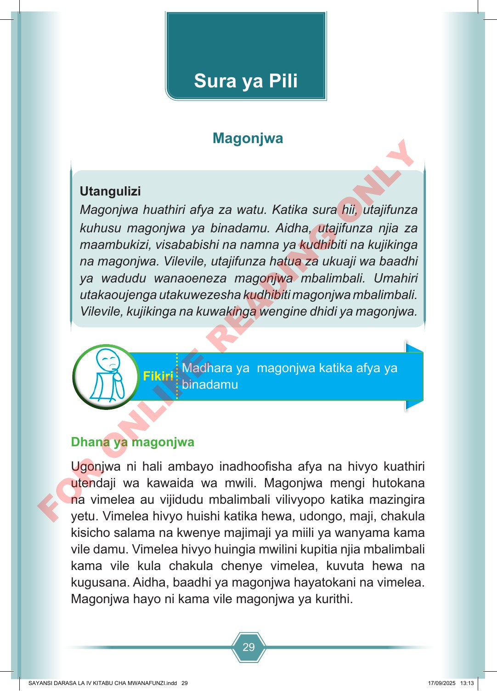

29 Utangulizi Magonjwa huathiri afya za watu. Katika sura hii, utajifunza kuhusu magonjwa ya binadamu. Aidha, utajifunza njia za maambukizi, visababishi na namna ya kudhibiti na kujikinga na magonjwa. Vilevile, utajifunza hatua za ukuaji wa baadhi ya wadudu wanaoeneza magonjwa mbalimbali. Umahiri utakaoujenga utakuwezesha kudhibiti magonjwa mbalimbali. Vilevile, kujikinga na kuwakinga wengine dhidi ya magonjwa. Madhara ya magonjwa katika afya ya binadamu Fikiri Dhana ya magonjwa Ugonjwa ni hali ambayo inadhoofisha afya na hivyo kuathiri utendaji wa kawaida wa mwili. Magonjwa mengi hutokana na vimelea au vijidudu mbalimbali vilivyopo katika mazingira yetu. Vimelea hivyo huishi katika hewa, udongo, maji, chakula kisicho salama na kwenye majimaji ya miili ya wanyama kama vile damu. Vimelea hivyo huingia mwilini kupitia njia mbalimbali kama vile kula chakula chenye vimelea, kuvuta hewa na kugusana. Aidha, baadhi ya magonjwa hayatokani na vimelea. Magonjwa hayo ni kama vile magonjwa ya kurithi. Sura ya Pili Magonjwa SAYANSI DARASA LA IV KITABU CHA MWANAFUNZI.indd 29 SAYANSI DARASA LA IV KITABU CHA MWANAFUNZI.indd 29 17/09/2025 13:13 17/09/2025 13:13 F O R O N L I N E R E A D I N G O N L Y